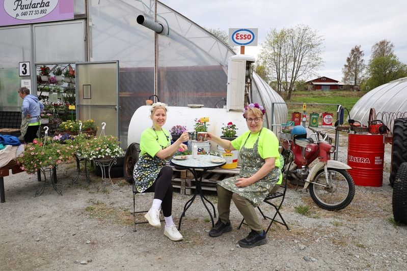

Event & Project Management Tools
Project Management tools: Jira, Asana, Workfront, LeadsApp, Salesforce, Microsoft tools.
Event Management tools: Adobe Creative Cloud, Microsoft tools, Teams, video and social media editor tools.
Event Management
Holistic Event Management from start to finish. Experience in planning and executing various congresses, user meetings, product launch events, and sponsorship deals. Handles catering and hotel reservations, speaker accommodation, and travel agency partnerships, along with congress booth design and coordination. Knowledge of Finland, Estonia, and Nordic regional congresses, compliance, and processes. Offers help to set up successful events from ground zero to execution, with knowledge of graphic design, project management, and video/photography skillsets.



Add a photo here
Add a photo here
Project Management
Project Management
Timelines, offer-creation coordination, and cross-team project plans — view the full samples on Google Drive →